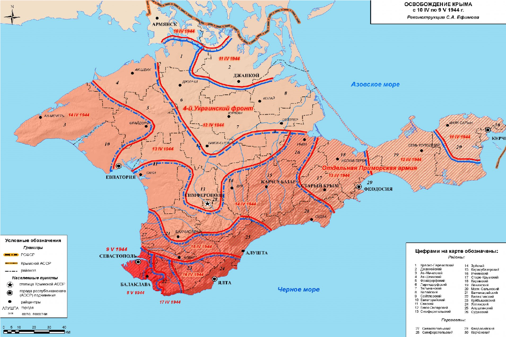
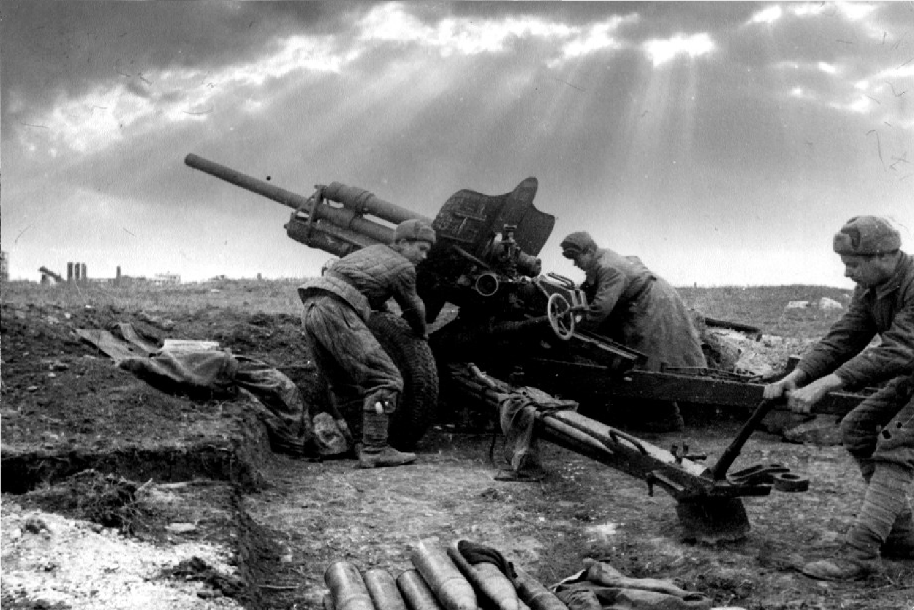
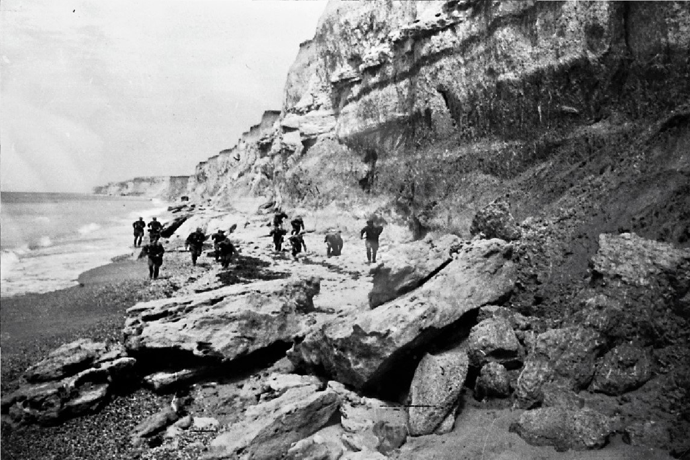

1944
|  |
|
ПредысторияПосле отступления советских войск из Крыма в 1941 году полуостров был оккупирован войсками нацистской Германии и её союзниками. В течение нескольких лет немецкие и румынские войска удерживали контроль над этой стратегически важной территорией, которая была важным пунктом для контроля Черноморского побережья. ПодготовкаК началу 1944 года стратегическая обстановка на Восточном фронте изменилась. Красная армия, осуществив ряд успешных операций, стала готовиться к освобождению Крыма. Крымская операция была частью более широких планов советского командования по подавлению врага на юге и освобождению оккупированных территорий. Ход операции Операция началась 8 апреля 1944 года с массированной артиллерийской подготовки и авиационной поддержки. Основные силы были сосредоточены на переправе через перегрузку, что затрудняло противнику защиту своих позиций. Одновременно советские войска начали наступление на Севастополь и другие ключевые районы полуострова.
Завершение операции25 мая 1944 года Крымская операция была завершена. Она привела к освобождению полуострова и значительным потерям среди немецких и румынских войск. Крым стал важной базой для дальнейших операций советских войск на Южном фронте. |
 |
|  |
Крымская операция продемонстрировала эффективность советского командования и боевого духа Красной армии. Освобождение Крыма стало важным стратегическим успехом и способствовало дополнительным успехам в ходе войны до окончательной победы в 1945 году. |